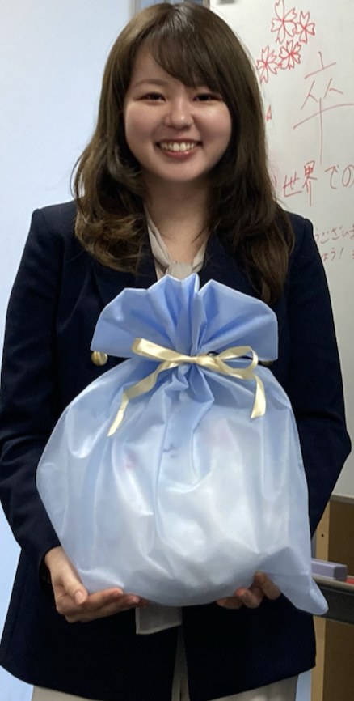

所属
- 青山学院大学 大学院教育人間科学研究科
- 日本学術振興会 特別研究員（PD）

祝・博士号で講座の皆からちいかわぬいぐるみをいただき、大変嬉しい
（2025.03.25. ＠名大）
学歴
- 2025/03 名古屋大学 大学院情報学研究科 心理・認知科学専攻 修了
- 2022/03 聖心女子大学 大学院文学研究科 人間科学専攻 臨床心理学研究領域 修了
- 2020/03 聖心女子大学 文学部 心理学科 卒業
資格
- 2023 公認心理師
- 2023 臨床心理士
経歴
- 2025/04–2028/03 日本学術振興会 特別研究員（PD） 受入研究機関：青山学院大学
- 2023/04–2025/03 日本学術振興会 特別研究員（DC2）受入研究機関：名古屋大学
- 2022/10–2023/03 東海国立大学機構 融合フロンティア次世代リサーチャー（革新的学際分野）
臨床歴
- 2022/04–2025/03 聖心女子大学 心理教育相談所 特任相談員
- 2022/04–2025/03 小石川東京病院 非常勤心理士
教育歴
- 2023/10–2023/12 名古屋大学 心理・認知科学データ解析 ティーチング・アシスタント
- 2020/10–2021/03 聖心女子大学 心理学実験演習３ ティーチング・アシスタント
- 2020/10–2021/03 聖心女子大学 基礎情報処理技法 ティーチング・アシスタント
- 2020/10–2021/03 聖心女子大学 心理学実験 ティーチング・アシスタント
賞罰
- 2024/07-2025/03 日本学術振興会 研究奨励金特別手当
- 2020/04 令和2年度 聖心女子大学大学院特別奨学金
研究獲得資金
- 2025/04-2028/03 日本学術振興会 科学研究費助成事業 特別研究員奨励費「アレキシサイミアの言語ー感情メカニズムの解明：AIシステムによる感情理解の支援」
- 2025/07-2026/03 青山学院大学 教育人間科学研究所プロジェクト「自己関連処理における物語視点とアレキシサイミア傾向の関係性：ERPを用いた検討」
- 2023/04-2025/03 日本学術振興会 科学研究費助成事業 特別研究員奨励費「物語理解時の心的シミュレーションに関する研究：対人能力向上メカニズムの解明と応用 」
- 2022/10-2023/03 科学技術振興機構 JST 次世代研究者挑戦的研究プログラム「物語理解時の心的シミュレーションが読者の感情および社会性に及ぼす影響」
- 2023/02 日本認知心理学会 若手研究者派遣事業 韓国認知生物心理学会年次大会への発表参加支援
査読歴
- Quarterly Journal of Experimental Psychology
所属学会
- 2025 日本感情心理学会
- 2024 The Society for Personality and Social Psychology
- 2024 日本社会心理学会
- 2024 日本大学メンタルヘルス学会
- 2023 日本学校メンタルヘルス学会
- 2023 Society for Applied Research in Memory and Cognition
- 2023 日本心理臨床学会
- 2023 Association for Psychological Science
- 2022 日本パーソナリティ心理学会
- 2022 日本認知心理学会
- 2022 日本心理学会